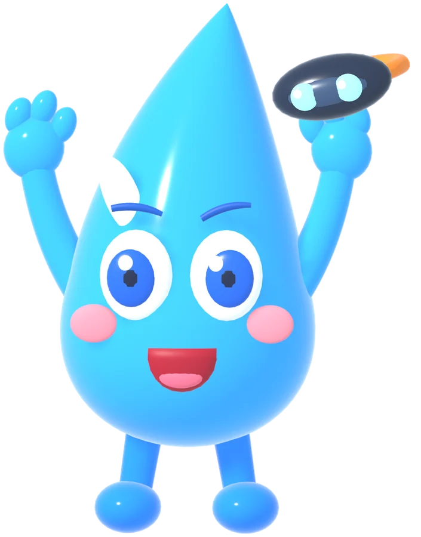
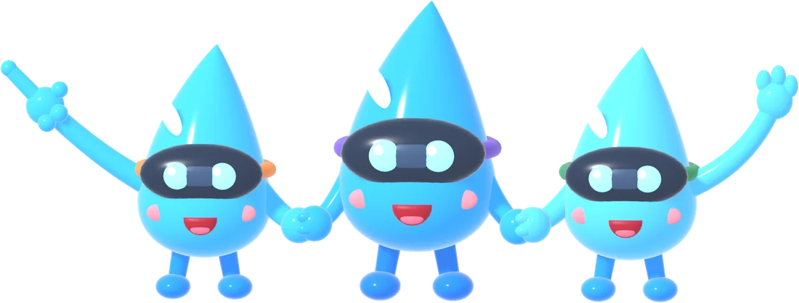

مغامرة
قطّورة والأبواب الثلاثة
ساعد قطّورة لتجد صديقاتها، واكتشف التبخر والتكثف.
حرّك الجهاز أو اسحب بإصبعك لتنظر حولك
اضغط ما يلمع
▶ ابدأ المغامرة
جاري تحميل المغامرة…
للنظارة: اضغط زر VR أسفل الشاشة بعد البدء، ثم ثبّت نظرك على الشيء لتختاره.
هيّا نبدأ المغامرة!


تعذّر تحميل المشهد. تأكد من الاتصال بالإنترنت ثم أعد تحميل الصفحة.